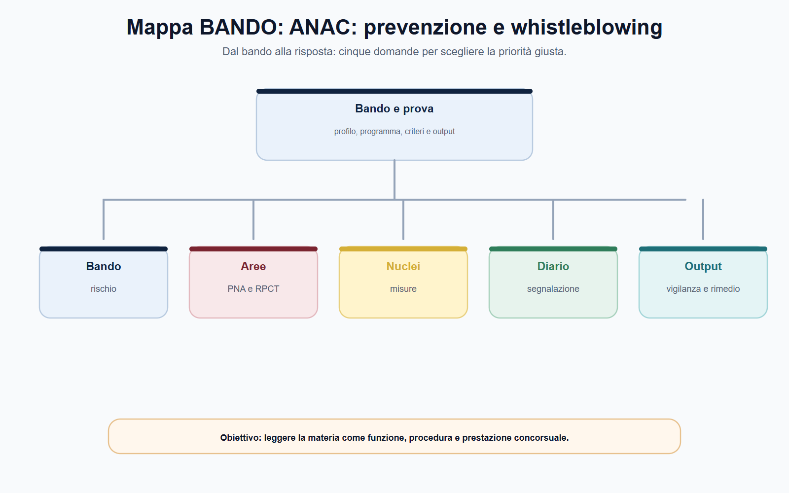
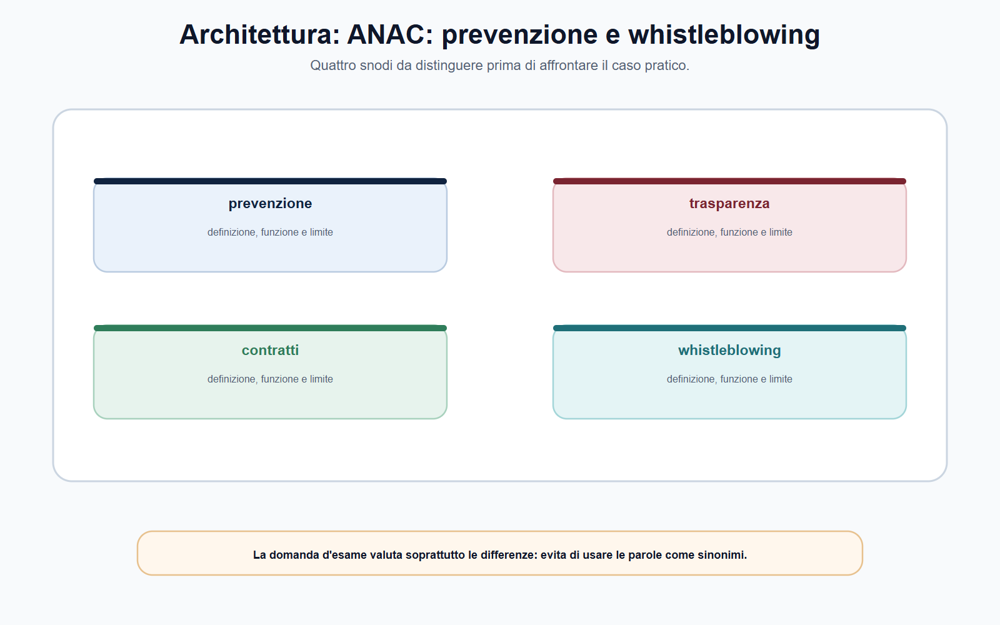
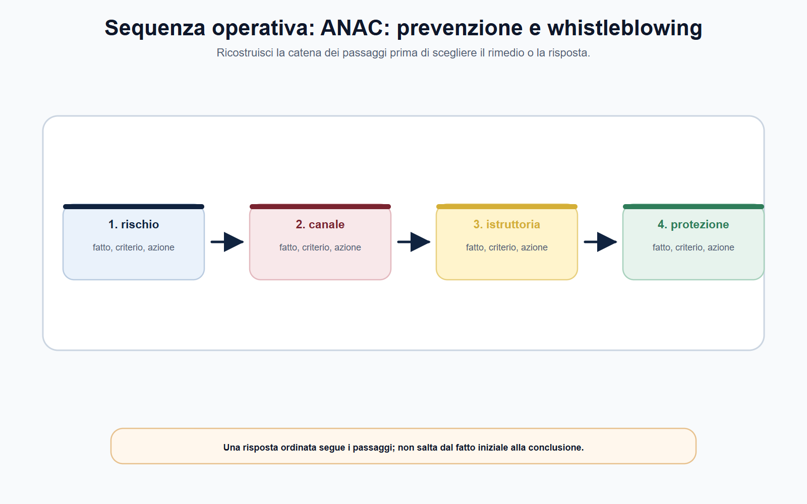
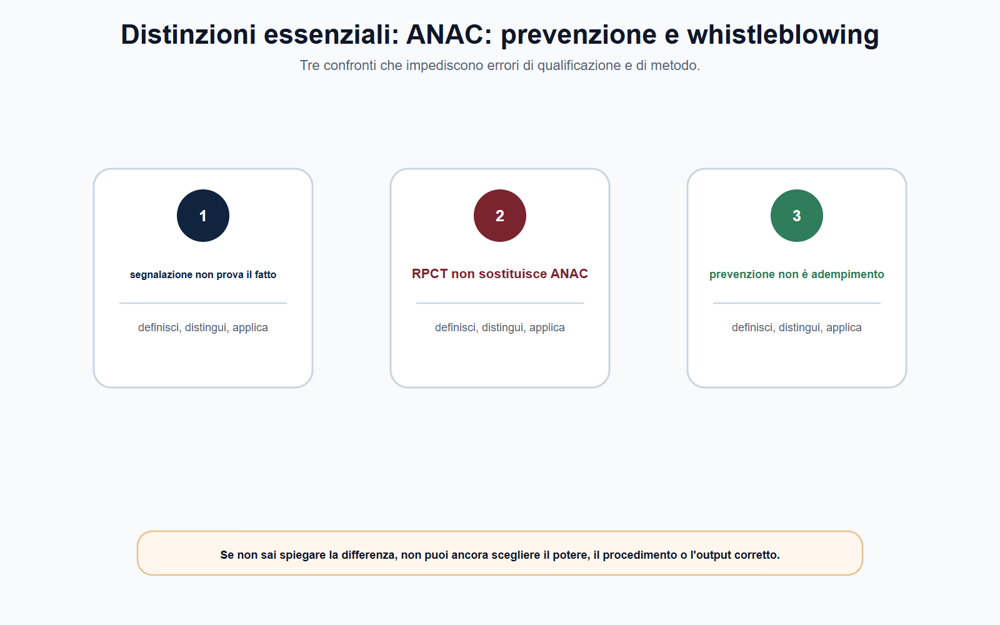

VOL-05 · Capitolo 14
M-FC05
ANAC:
prevenzione, vigilanza e whistleblowing
La prevenzione della corruzione non è una cartella da aggiornare una volta l'anno. È un metodo di governo: conoscere i processi, individuare i punti in cui una decisione può essere deviata, adottare misure ragionevoli, controllarne l'applicazione e correggere gli scostamenti.
01 · Il problema in prova
Non chiamare «anticorruzione» ogni irregolarità
Quale processo è esposto a rischio, quale misura o obbligo di trasparenza è pertinente, chi deve attuarlo e quando può intervenire ANAC? La qualificazione corretta viene prima dell'eventuale vigilanza o sanzione.
Che cos'è
ANAC è autorità indipendente di promozione, regolazione e vigilanza nei perimetri della legge: prevenzione della corruzione, trasparenza e contratti pubblici. Non si esaurisce nelle sanzioni e non diventa il responsabile diretto dei processi interni di ogni ente.
A che serve in prova
A distinguere ANAC dal committente. L'amministrazione resta responsabile del proprio assetto organizzativo. ANAC orienta, vigila e interviene attraverso i poteri attribuiti. Dire che «ANAC controlla tutto» è inesatto.
ANAC non è il committente e non gestisce l'ente.
In chiave preventiva, la corruzione amministrativa non coincide soltanto con il reato: comprende il rischio che una funzione pubblica sia esercitata in modo non imparziale, opaco o orientato a interessi diversi da quelli istituzionali. La l. n. 190/2012 interviene sull'organizzazione prima dell'illecito concluso.
02 · BANDO
Cinque decisioni su questo capitolo
Cerca PNA, RPCT, trasparenza, vigilanza, d.lgs. n. 24/2023, canali di segnalazione e ritorsione.
| Che cosa fai | Se la salti | |
|---|---|---|
| B — Bando | Segna ANAC, prevenzione, PNA, RPCT, trasparenza, contratti, whistleblowing. | Studi un elenco di adempimenti senza processo. |
| A — Aree | Collega organizzazione, rischi, pubblicazioni, gare, segnalazioni, responsabilità. | Confondi ANAC con la stazione appaltante. |
| N — Nuclei | PNA ≠ piano interno; RPCT ≠ ente; canale interno ≠ canale esterno; ritorsione ≠ atto sfavorevole. | Copi il PNA o invii tutto ad ANAC. |
| D — Diario | Segna «ogni disagio è whistleblowing» e «PNA da copiare». | Ripeti le trappole all'orale. |
| O — Output | Mappa processo–rischio–misura, schema di vigilanza, caso di segnalazione. | Frase generica sulla legalità. |
03 · Metodo
Dal processo alla vigilanza
Un ente non previene il rischio copiando una tabella standard: deve conoscere struttura, attività, relazioni esterne, risorse e vulnerabilità. Una misura utile per una gara complessa può essere irrilevante per un'autorizzazione.

Processo, rischio, misura, monitoraggio, vigilanza. Ogni riga ha una domanda e un output. La formula «rafforzare la legalità» non è ancora una misura.
04 · Catena
PNA, programmazione e RPCT
Il Piano Nazionale Anticorruzione è il riferimento per la strategia nazionale. Il PNA 2025, approvato da ANAC con delibera n. 19 del 28 gennaio 2026, orienta: non autorizza la trasposizione meccanica di modelli uguali per enti diversi. La pianificazione interna deve essere coerente con dimensione, funzioni, risorse, contesto e disciplina applicabile.
| Attore | Responsabilità |
|---|---|
| Organo di indirizzo | Indirizzi, risorse, responsabilità organizzative. Non è un compito solo tecnico. |
| RPCT | Coordina, propone, monitora, segnala. Non è il responsabile esclusivo di ogni rischio. |
| Dirigenti | Applicano misure nei processi, organizzano controlli, rendicontano. |
| Personale | Rispetta regole, segnala criticità, collabora ai controlli. |
| ANAC | Indirizza, vigila e interviene nei limiti attribuiti. Non gestisce l'ente. |

05 · Vigilanza
Oggetti diversi, poteri diversi
In anticorruzione e trasparenza ANAC può verificare adozione ed effettività di misure, obblighi di pubblicazione, segnalazioni e condizioni che rendono il sistema credibile. Nei contratti pubblici esercita funzioni specifiche di regolazione e vigilanza. Questo capitolo non sostituisce la disciplina degli appalti: insegna a non confondere il controllo sul rischio con la ricostruzione completa della gara.
| Piano | Domanda |
|---|---|
| Preventivo | Quale processo, rischio e misura? Chi attua e chi monitora? |
| Trasparenza | Quale obbligo di pubblicazione, con quale limite di pertinenza e di dati? |
| Contratti | Quale funzione ANAC sul mercato o sulla stazione appaltante, secondo il Codice e gli atti? |
| Disciplinare / penale / contabile | Quale altra autorità e quale procedimento proprio? |
Per ogni episodio scrivi una riga per ciascun piano. Un fatto può toccarne più di uno, ma nessun piano assorbe automaticamente gli altri. La vigilanza non è sinonimo di colpevolezza.
06 · Sequenza
Dal fatto al potere
Una segnalazione, un'anomalia nei dati o l'assenza di una pubblicazione possono avviare una verifica. La conclusione richiede competenza, istruttoria, elementi, contraddittorio nei casi previsti e motivazione. Anche gli atti di indirizzo, i pareri e i provvedimenti d'ordine hanno natura e presupposti diversi.

Quale potere attribuisce la fonte, per quale oggetto, con quale procedura e con quale possibile effetto? La trasparenza non rende lecito pubblicare ogni dato.
07 · Whistleblowing
Canale protetto, non vertenza individuale
Il d.lgs. n. 24/2023 protegge chi segnala informazioni sulle violazioni acquisite nel contesto lavorativo, quando ricorrono le condizioni previste. Non coincide con una contestazione sul proprio rapporto di lavoro, con una richiesta di riesame, con una doglianza generica o con la diffusione indiscriminata di informazioni.
| Elemento | Domanda di qualificazione |
|---|---|
| Contesto | L'informazione è stata acquisita nel contesto lavorativo? |
| Contenuto | Riguarda una violazione nel perimetro normativo? |
| Interesse | Mira all'interesse pubblico o all'integrità dell'ente? |
| Canale | Interno, esterno ANAC, divulgazione o denuncia: quali presupposti? |
| Tutela | Riservatezza, ragionevolezza, protezione da ritorsioni? |
Non è un'alternativa liberamente sceglibile. In sintesi: assenza o non conformità del canale interno obbligatorio, mancato seguito, rischio ragionevole di inefficacia o ritorsione, oppure pericolo imminente o palese per il pubblico interesse. Verificare le condizioni di legge.
08 · Ritorsione
Presunzione, non automatismo
ANAC gestisce le segnalazioni esterne e le comunicazioni su possibili ritorsioni. Non decide ogni vicenda lavorativa né sostituisce datore di lavoro, giudice del lavoro, autorità giudiziaria o Corte dei conti. Trasferimento, mancato rinnovo, valutazione negativa o esclusione da un incarico non sono automaticamente ritorsivi.
Quando il segnalante prova di avere effettuato una segnalazione conforme e di avere subito una condotta ritenuta ritorsiva, si presume il collegamento: chi ha adottato la misura deve dimostrare ragioni estranee. La regola non si estende automaticamente ai soggetti collegati dell'art. 3, comma 5, se sono essi a lamentare la ritorsione.
ANAC accerta la ritorsione nei limiti delle proprie attribuzioni; la dichiarazione di nullità dell'atto spetta all'autorità giudiziaria.

09 · Procedimento
Riservatezza e contraddittorio
La riservatezza protegge identità e informazioni nei limiti della legge; il divieto di ritorsione protegge dalle conseguenze pregiudizievoli collegate alla segnalazione. Non autorizzano segnalazioni consapevolmente false né eliminano la necessità di agire con ragionevole convinzione. Il segnalante non ha sempre ragione e la segnalazione non è segreta in assoluto.
Ricezione
Canale, soggetto e contenuto rientrano nel perimetro?
Qualificazione
Violazione, informazione lavorativa, interesse protetto, cronologia.
Istruttoria
Riservatezza, verifiche, autorità competente, esito motivato.
Trasferimento successivo alla segnalazione: si registrano date e atti, si verificano le condizioni di tutela, si chiedono ragioni organizzative e documentazione contemporanea alla decisione. Mera successione temporale e mera etichetta «esigenza organizzativa» non bastano.
10 · Caso guidato
Affidamenti ricorrenti e presunta ritorsione
Un dipendente segnala dal canale interno che piccoli affidamenti informatici sono assegnati sempre agli stessi operatori, con motivazioni simili e documentazione incompleta. Dopo alcune settimane è escluso da un gruppo di lavoro. Invia la segnalazione ad ANAC con alcuni messaggi di posta.
| Piano | Ragionamento |
|---|---|
| Prevenzione | Ricostruire affidamenti, responsabilità, controlli, conflitti, tracciabilità. La ricorrenza è un segnale, non la prova automatica dell'illecito. |
| Contratti e trasparenza | Obblighi e dati rilevanti, senza supporre che ogni irregolarità documentale abbia la stessa conseguenza. |
| Whistleblowing | Contenuto, canale interno, riscontro ricevuto, condizioni per l'eventuale canale esterno. |
| Ritorsione | Tempo, motivazioni, prassi, criteri, atti. ANAC nel proprio perimetro; disciplinare, contabile o penale seguono competenze proprie. |
11 · Verifica
Due domande da saper spiegare
Ruolo di ANAC: prevenzione, vigilanza, whistleblower
ANAC promuove trasparenza e buona gestione e svolge prevenzione, regolazione, vigilanza, consulenza e intervento nei settori attribuiti. La prevenzione parte da processi e rischi, individua misure e ne verifica l'effettività. Il PNA offre indirizzi; l'ente resta responsabile. Nel whistleblowing il d.lgs. n. 24/2023 tutela chi segnala violazioni nel contesto lavorativo. Il canale esterno opera alle condizioni di legge.
Una denuncia di disagio lavorativo è sempre whistleblowing protetto?
No. Occorre verificare che riguardi informazioni su violazioni rientranti nella disciplina, acquisite nel contesto lavorativo, e che sia effettuata nell'interesse pubblico o dell'integrità dell'ente, attraverso il canale e con le condizioni applicabili. Le tutele del lavoro restano valutabili nei procedimenti propri.
12 · Mini-esercizio
Criticità nel ciclo di affidamento
Completa la griglia. L'esercizio è corretto se non qualifica come corruzione ogni anomalia e se indica, per ciascun seguito, la fonte e il procedimento.
| Campo | Appunto da raccogliere |
|---|---|
| Processo | Programmazione, affidamento, esecuzione, pagamento o controllo. |
| Rischio | Favoritismo, conflitto, carenza di tracciabilità, opacità da qualificare. |
| Soggetti | Responsabile, ufficio, dirigente, RPCT, operatore economico, terzi. |
| Misura | Controllo, separazione, pubblicazione, dichiarazione, tracciabilità, monitoraggio. |
| Prove | Atti, cronologie, dati, comunicazioni, registri, documenti di gara. |
| Canale e seguito | Gestione ordinaria, misura preventiva, whistleblowing, vigilanza ANAC o altra autorità. |
13 · Errori
Tre formule da non usare
PNA da copiare
Il PNA definisce strategia e indirizzi nazionali. L'ente li traduce in misure proporzionate a struttura, processi, rischi e risorse, e ne monitora l'attuazione.
ANAC = committente
ANAC non è la stazione appaltante e non gestisce i processi interni. Vigila e interviene nei limiti attribuiti; l'ente resta responsabile.
RPCT fa tutto
Se tutti gli obblighi sono scaricati sul RPCT, il sistema è apparente: chi gestisce i processi non modifica comportamenti, controlli o flussi.
Gli obblighi di pubblicazione si verificano insieme alla disciplina sulla protezione dei dati, alla pertinenza e alle regole di accesso. ANAC non decide in astratto che la pubblicità prevalga sempre.
14 · Da tenere ferme
Cinque regole, con il perché
1. ANAC previene e vigila; non è il committente e non sostituisce la responsabilità dell'ente.
2. PNA e programmazione interna non coincidono; il RPCT non assorbe organi di indirizzo, dirigenti e uffici.
3. Prevenzione, trasparenza, contratti, disciplinare, penale e contabile sono piani da tenere distinti.
4. Il whistleblowing richiede contesto lavorativo, violazione, interesse protetto e canale corretto.
5. La ritorsione si prova con sequenza e ragioni; la presunzione non è un automatismo e la nullità spetta al giudice.
15 · Cinque righe
Da sapere prima dell'orale
ANAC promuove trasparenza e buona gestione e svolge funzioni di prevenzione, vigilanza, regolazione, consulenza e intervento nei limiti attribuiti. La prevenzione si basa su processi, rischi, misure e monitoraggio; PNA e RPCT non sostituiscono la responsabilità dei vertici e degli uffici. Trasparenza e contratti pubblici sono ambiti collegati ma dotati di regole proprie. Il whistleblowing riguarda segnalazioni qualificate nel contesto lavorativo e richiede canali e presupposti corretti. La segnalazione non accerta da sola un illecito e non sostituisce procedimenti disciplinari, penali, contabili o civili.
Nel quiz cerca la distinzione PNA / programmazione / RPCT. All'orale enuncia criterio, limite ed esempio. Nel caso individua fatti, fonte, competenza e passo istruttorio. Una risposta lunga non è automaticamente più completa.
Prossimo capitolo
Laboratorio delle prove authority
Chiusa la mappa delle autorità, si allena l'output. Quesito, caso, nota, memo, orale. Il volume si chiude sul bando, non su un altro volume.